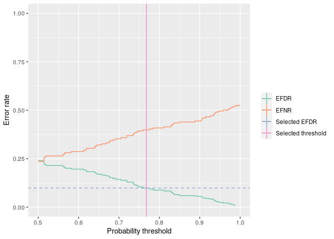

The goal of bayefdr is to provide tools for the estimation and optimisation of Bayesian expected false discovery and expected false negative rates.
Installation
You can install the released version of bayefdr from CRAN with:
Usage
The main functions in this package are efdr, efnr and efdr_search. efdr and efnr calculate the EFDR or EFNR for a vector of probabilities given a specified probability threshold. efdr_search finds the probability threshold that matches a target EFDR as closely as possible. The basic input to this function is a vector of probabilities and a target EFDR.
library("bayefdr")
set.seed(42)
probs <- runif(100)
efdr(0.7, probs)
#> [1] 0.1429126
efnr(0.7, probs)
#> [1] 0.3531349
efdr <- efdr_search(probs, target_efdr = 0.1)
efdr
#> An object of class 'bayefdr'.
#> Optimal threshold: 0.768 EFDR: 0.0985 EFNR: 0.399The output of this function is a data.frame with some extra attributes. There is a plot method too.
head(efdr)
#> threshold EFDR EFNR
#> 1 0.50000 0.239581 0.2361073
#> 2 0.50025 0.239581 0.2361073
#> 3 0.50050 0.239581 0.2361073
#> 4 0.50075 0.239581 0.2361073
#> 5 0.50100 0.239581 0.2361073
#> 6 0.50125 0.239581 0.2361073
plot(efdr)